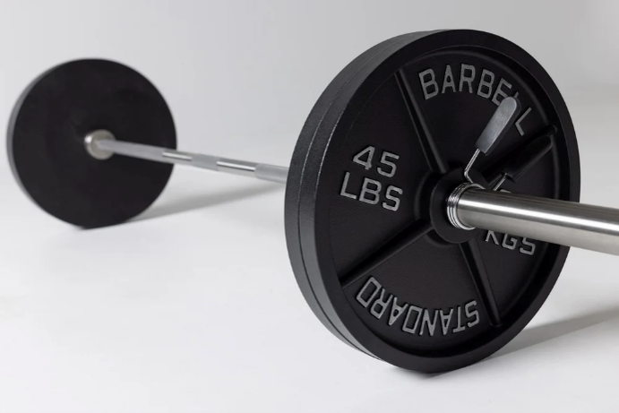
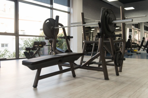

Bench Press Equipment
Everything you need to set up your bench press station the right way.

The Bar and Plates / Dumbbells
The barbell is the foundation of any serious bench press setup. A standard Olympic bar weighs 45 lbs and is designed to hold weighted plates on each end. Dumbbells offer an alternative that improves unilateral strength and range of motion.
Choose plates based on your current strength level and progression goals. Always use collars to secure plates safely before lifting.

The Bench
A solid, sturdy bench is non-negotiable. Look for a flat bench with a weight capacity that exceeds what you plan to lift. Adjustable benches offer incline and decline positions for targeting different parts of the chest.
Make sure the padding is firm enough to support your back without sinking, and that the legs are wide enough for stability during heavy lifts.